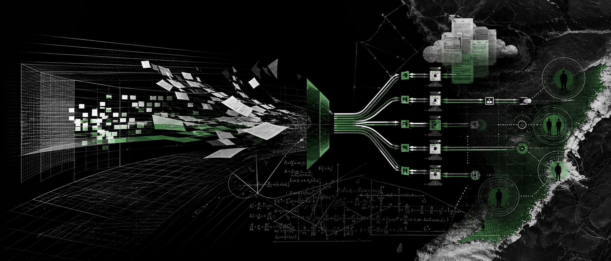
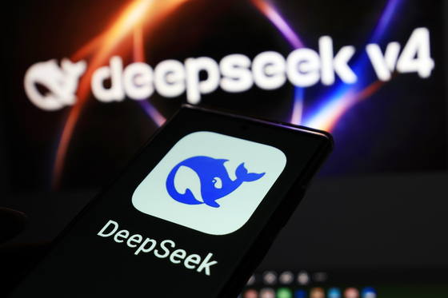
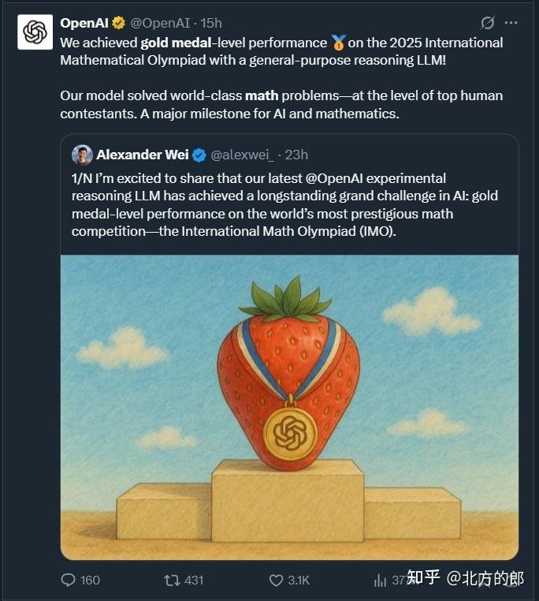
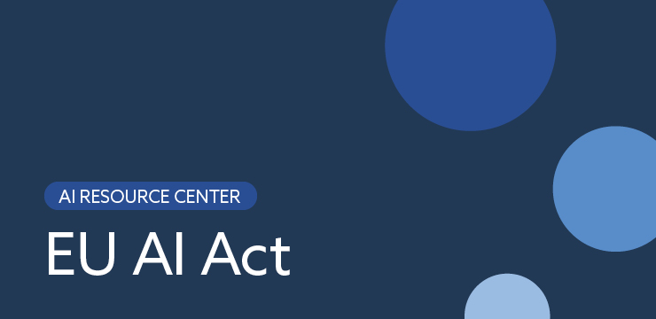
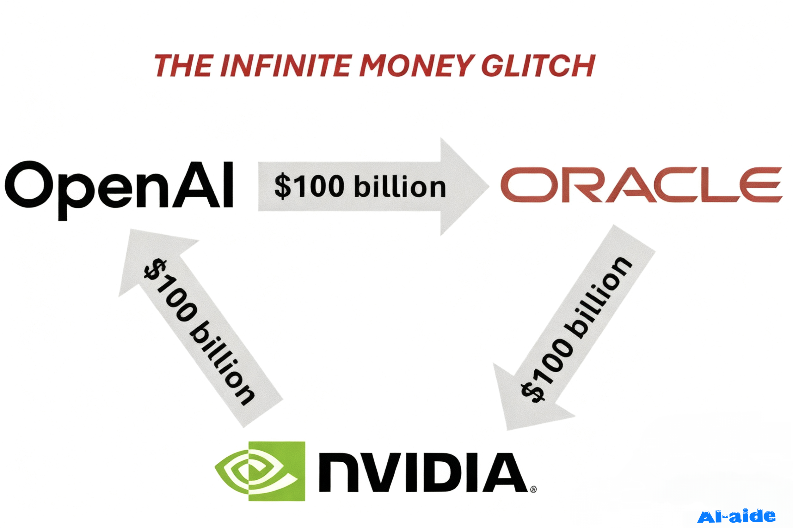
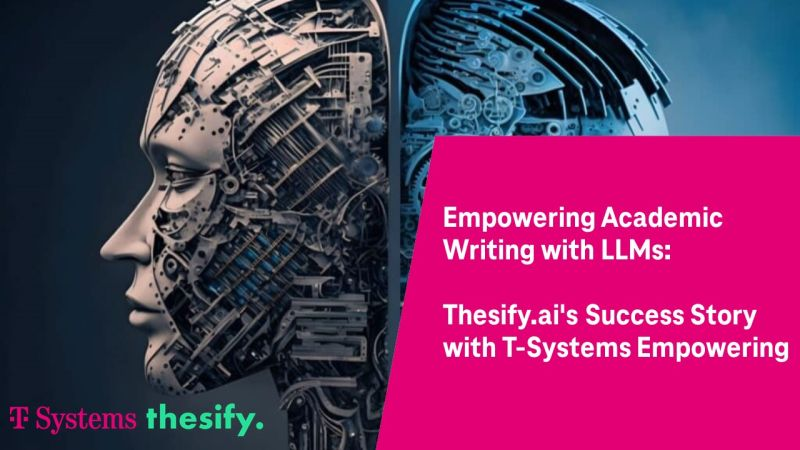
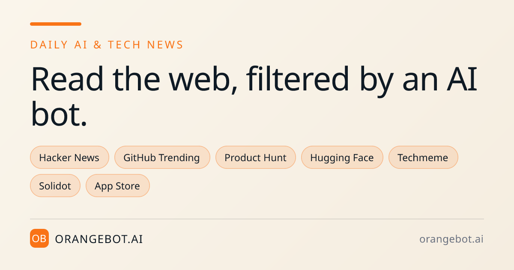
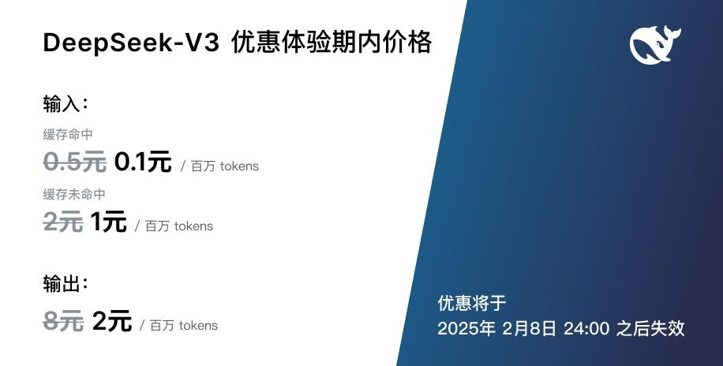
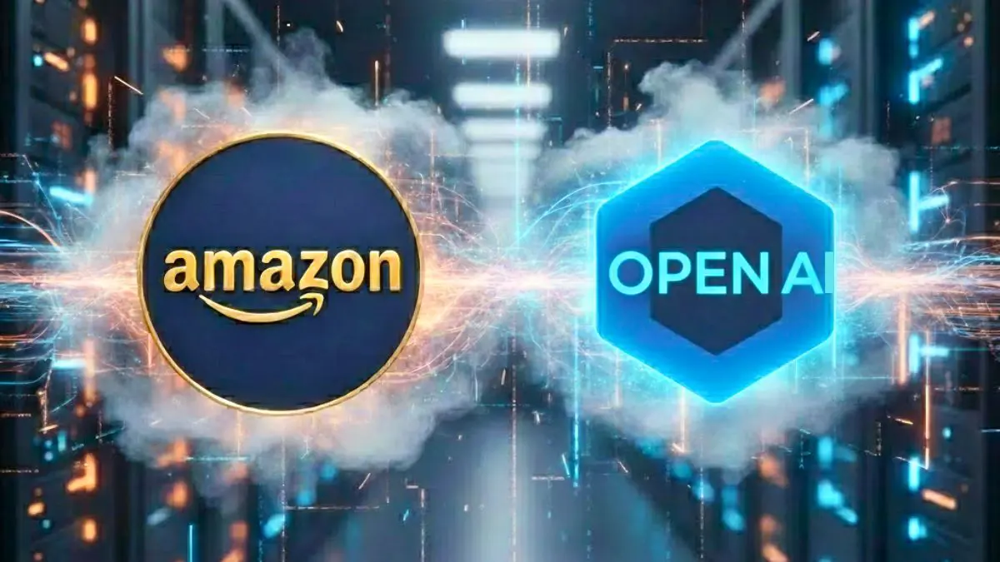
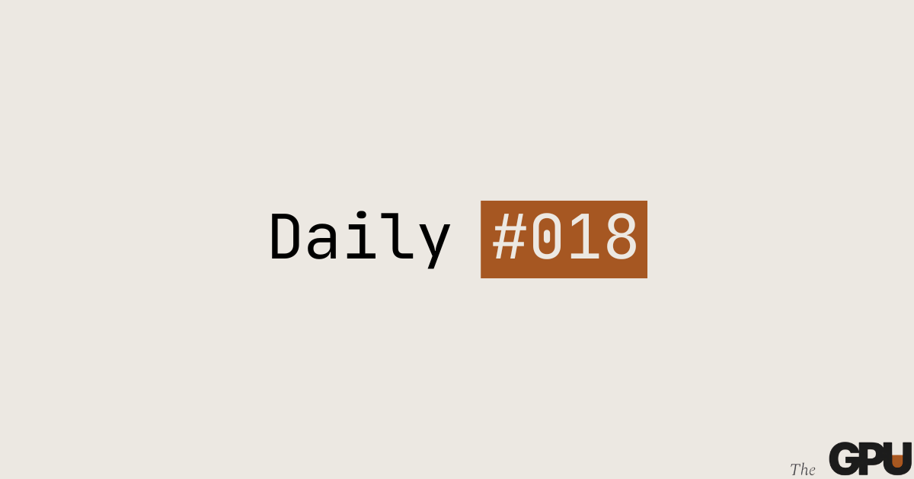

2026-08-02
VOL 306

读者，早。
对创作者和中小团队来说，便宜模型会继续变多，但便宜不等于自由。你能不能接入、能不能解释生成内容、能不能承担医疗或教育场景里的风险、能不能在云账单之外留一条备选路线，会比追下一个模型名更影响现金流。

财新报道称，DeepSeek 在 7 月 31 日发布 DeepSeek-V4-Flash 正式版，文章于 8 月 1 日凌晨刊出。该版本强调更强的 autonomous agent 能力，并继续降低 API 成本；财新摘要还称官方版架构与 4 月预览版一致，性能提升主要来自 post-training，V4-Pro 并未同步出现。

The Guardian 在 8 月 1 日报道，中国 AI、芯片和机器人进展正在搅动硅谷与白宫。报道把 Moonshot AI 的 Kimi K3、开源模型限制争论、FCC 对中国人形机器人采取行动，以及芯片市场波动放在同一张图里：美国科技公司并不一致，一边担心安全，一边又需要低成本开放模型。

OpenAI 在 8 月 1 日发布十项数学和理论计算机科学结果，覆盖高维球堆积、编码理论、非 sofic 群、Connes 刚性猜想、算术电路复杂度、量子并行重复、格密码相关问题和 Ramsey 数等方向。OpenAI 称这些结果由内部版本 Astra 生成，人类协助整理手稿并用 Lean 形式化验证。

围绕 EU AI Act 的新透明要求，多个合规解读在 8 月 1 日前后集中提醒企业：8 月 2 日起，聊天机器人披露、AI 生成内容标记、deepfake 标签和部分高风险系统规则进入关键执行阶段。对面向欧盟用户的生成式 AI 服务，这不再只是法务备忘录。

WRDW/WAGT 在 8 月 1 日报道，Georgia Tech 与 Children's Healthcare of Atlanta 正在开发一个基于社交媒体数据的 AI 工具，用来识别青少年可能出现严重心理健康事件的风险。报道称该工具仍在开发中，基础来自多年研究，包括线上用词、互动内容和信息暴露信号。

OpenAI 在《Building abundant intelligence》中披露，GPT-5.6 Luna 输入价格降到每百万 token 0.20 美元、输出 1.20 美元，Terra 为 2 美元和 12 美元；文章还称 GPT-5.6 Sol 帮助优化服务软件，使端到端 serving 成本下降 20%，并改进 speculative decoding，让 token 生成效率提高超过 15%。

T-Systems 的 AI Foundation Services 文档在模型退休页面提示，GLM-5.2、Nemotron 3 和 Qwen 3.6 已进入 production，同时提醒用户在 2026-09-01 前迁移部分 deprecated models。这个更新不是大发布会，却直接影响企业调用栈里的可用模型清单。

OrangeBot 的 8 月 1 日模型榜单把 Qwen-UI-Agent 列为本周模型，描述其统一 action space 可交错 GUI 操作和 CLI 执行，并能在单轮生成批量动作。榜单还提到它使用真实设备移动运行时、AutoResearch 式数据飞轮和超过 100 轮轨迹的 online RL。

Axios 在 8 月 1 日把 DeepSeek 新模型称为 AI 价格战继续加速的信号，强调中国实验室正在用极低价格提供强代码能力。与财新的产品信息合并看，V4-Flash 的重点不只是能力表，而是把大规模代码生成和 Agent 任务的边际成本继续压低。

OpenAI 在数学结果说明中明确讨论 attribution：如果证明完全由 AI 生成，却声称人类作者完成，会误导外界对系统贡献和人类智力劳动的理解。OpenAI 表示人类帮助准备手稿并形式化证明，同时对正确性负责，但数学论证由模型生成。
Transparency Coalition 汇总称，2026 年已有 27 个州通过 84 项 AI 新法，其中医疗授权和心理健康聊天机器人是高频领域。文章列出 7 个州限制保险公司用 AI 做医疗授权决策，5 个州限制 AI therapy chatbot；Iowa 还要求医疗录音和转写前取得患者同意，该条款 8 月 1 日生效。

The Guardian 报道称，Microsoft、Nvidia、Palantir、Meta 等公司近日公开呼吁美国不要限制 open models，Nvidia CEO Jensen Huang 也赴国会游说支持开放模型。与此同时，OpenAI 和 Anthropic 更强调中国模型可能带来的安全风险，产业内部裂痕公开化。

Cursor 社区 8 月 1 日出现用户反馈，质疑 OpenAI 和 Anthropic 降价后，工具层为什么没有把收益传导给用户。这个帖子本身不是大新闻，却反映出开发者工具进入新阶段：底层模型价格透明后，壳层产品的毛利会被用户拿来逐项比较。

Financial Times 报道称，Amazon 已完成对 OpenAI 的 500 亿美元投资，约取得 5% 股份，并把这笔交易与 AWS、芯片、计算基础设施和云服务合作绑定。报道还提到 Amazon 对 Anthropic 也有大额承诺，目标之一是推广 Trainium 芯片并争取前沿模型供给。
Financial Times 8 月 1 日报道，Leopold Aschenbrenner 的 Situational Awareness fund 因 AI 相关股票下跌和债权人要求还款，被迫将多数公开持仓卖给 Citadel。报道称该基金年内仍有 80% 收益，但杠杆和流动性压力让它在波动中失去主动权。
Futurum Research 8 月 1 日的市场报道提到，Blackbaud 的 Agents for Good 面向 nonprofit 和 social-good 场景，把 agentic AI 放进云原生平台。报道背景还提到企业软件正在接受 agentic AI，决策者对这类技术的优先级继续上升。

The GPU Daily 8 月 1 日在当日简报中提到 Together AI released autoscaling endpoints for LLM workloads。对开发者来说，这类能力的价值不是新模型，而是把流量尖峰、冷启动和闲置成本交给托管层处理，适合做原型、活动页、内部工具和周期性批处理。